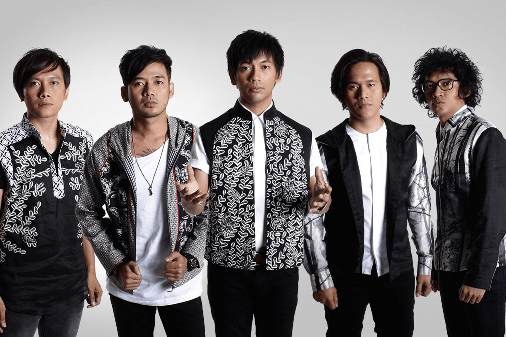

D'MASIV merupakan sebuah grup musik asal Jakarta, Indonesia. Lima orang anak muda yaitu Rian Ekky Pradipta (vokal), Dwiki Aditya Marsali (gitar), Nurul Damar Ramadan (gitar), Rayyi Kurniawan Iskandar Dinata (bass), dan Wahyu Piadji (drum) percaya jika D'MASIV adalah tiket untuk mereka menuju puncak di belantika musik Indonesia.
D'MASIV pertama kali dibentuk pada 3 Maret 2003. Nama D'MASIV sendiri berasal dari kata dalam bahasa Inggris "massive" sebagai semacam pengharapan agar bisa meraih hasil sebaik mungkin di kancah musik nasional. Nama mereka mulai melambung setelah berhasil memenangkan kompetisi musik A Mild Live Wanted pada tahun 2007.
D'MASIV akhirnya merilis album pertama mereka berjudul "Perubahan" pada tahun 2008 dengan lagu "Cinta Ini Membunuhku" sebagai lagu andalannya. Lagu ini sangat populer sehingga semakin melambungkan nama mereka di kancah musik nasional.